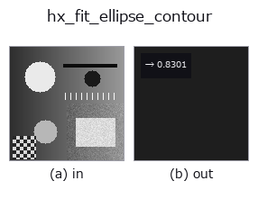

halcon_ext op• Datenarten: contour → feature
• Aufruf: fullseye.apply(img, "hx_fit_ellipse_contour", a=0.5, b=0.5) (das 2-D-Modell ist ein Bild plus zwei skalare Regler a,b∈[0,1])
• HALCON-Äquivalent: fit_ellipse_contour_xld (Bedeutung und Parameter sind in der HALCON-Referenz nachzulesen)

*Die Abbildung ist die tatsächliche Ausgabe auf einer synthetischen 128×128-Eingabe. Links Eingabe, rechts Ausgabe. Punktwolken als Draufsicht-Streudiagramm (Helligkeit = z), 1-D-Reihen als Linie, Volumen als Maximum-Projektion entlang z, Videos als mittleres Bild, komplexe Bilder als Betrag; Rückgabewerte, die kein Bild ergeben, werden als Werte gezeigt.*
*Regler a ändert die Ausgabe nicht (gemessen: identisch bei 0,1 / 0,5 / 0,9).*
*Regler b ändert die Ausgabe nicht (gemessen: identisch bei 0,1 / 0,5 / 0,9).*
Stufen (die vorangehenden Ops → dieser Op, von links nach rechts):
▸ hx_fit_ellipse_contour: stages (docs site)
Passt aus den zweiten Momenten eine Ellipse an und liefert das Achsenverhältnis (klein/groß: 1 beim Kreis, gegen 0 je länglicher).
> Die ausführliche Beschreibung unten ist der Originaltext — Zusammenfassung und Überschriften sind übersetzt.
全 contour の点をまとめて座標共分散行列の固有値 `λmin, λmax を取り、sqrt(λmin/λmax)`(主軸方向の標準偏差
の比 = 慣性楕円の短軸/長軸)を `np.float64` で返す。
• `a, b` は未使用。
• 点が 3 個未満、または `λmax <= 1e-9`(全点一致)なら 0.0。負の固有値は 0 に clip する。
1 に近いほど等方(真円)、0 に近いほど細長い。楕円境界を当てはめる代数的フィットではなく点群の 2 次モーメント
なので、点の密度の偏りや欠けた弧では軸比が変わる。楕円の傾き・中心は返さない(`orientation_xld` /
`area_center_xld)。cv2.fitEllipse 版は elliptic_axis_xld。楕円からの逸脱量は hx_dist_ellipse_contour`。
• Leitfaden zur Familie gallery2d_halcon_ext
• Katalog der Beispieldaten (Download-URLs / Lizenzen) — 2-D nutzt skimage.data (BSD/Public Domain) plus synthetische Bilder, 3-D nennt Download-URLs echter Datenquellen (Stanford, PDS, …).
• Herkunft und Literatur der Operatoren — die Quellen der Forschung/Verfahren, auf denen diese Operatorfamilie beruht.
• Der kanonische Algorithmus (Autor, Jahr) und seine Anwendungen stehen im Familienleitfaden oben.
Das Programm unten ist nachweislich lauffähig (gleiche Eingabe wie die Abbildung). In der Studio-Hilfe wird dieser Block zu Schaltflächen, die es sofort laden und ausführen.
threshold 0.50 0.50 sk_find_contours 0.50 0.50 hx_fit_ellipse_contour 0.50 0.50
▸ Load this pipeline · Load & run
• gallery2d_halcon_ext — py -3.11 examples/gallery2d_halcon_ext.py
feature als Eingabe)halcon_ext)hx_gen_circle · hx_gen_ellipse · hx_gen_rectangle2 · hx_gen_checker_region · hx_gen_grid_region · hx_gabor · hx_fit_surface1 · hx_fit_surface2
*Provenance: ops.py — 2D Operator-Registry. Diese Notiz wird von tools/opdocs.py md erzeugt (nicht von Hand bearbeiten).*
© 2026 Kazufumi Furuse — Fullseye operator documentation. Licensed under Apache-2.0.
{kind=link}